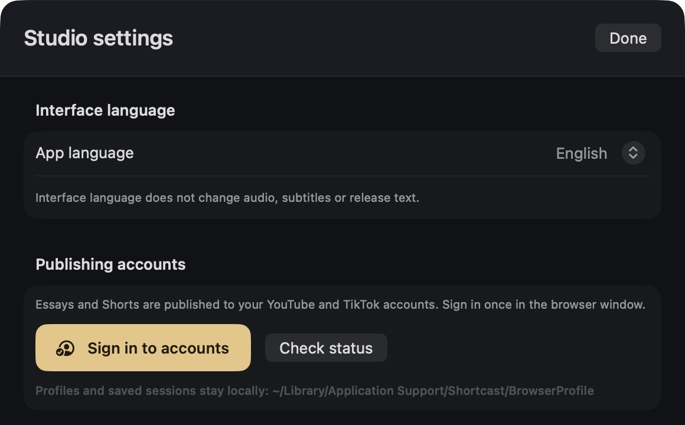

Native macOS AI video studio
A real Apple Silicon application for video essays and Shorts: SwiftUI, local MLX and WhisperKit, AVFoundation and FFmpeg. UI language is independent of the Ukrainian content.




The editing view shows a saved project after its source media was removed. Its original footage is unavailable; the edit, dialogue and controls remain visible. No generated interface mockups are used.